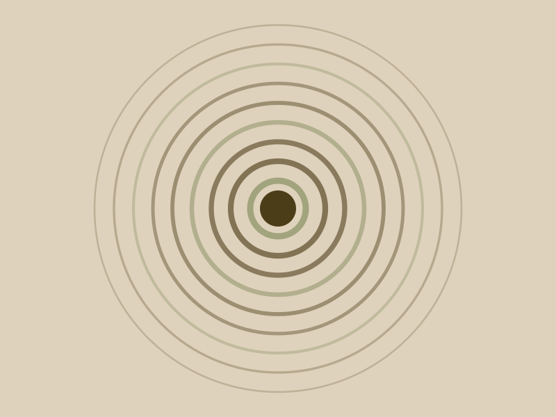

Customer Segmentation
A peer reviewed paper on deep learning for customer segmentation, accepted in the top 25% of global submissions.
- WhereAMCIS 2025
- WhenPeer reviewed publication
- TypeResearch

Context
Segmentation research has a habit of optimising for cluster quality metrics that no marketing team has ever acted on. We wanted to test whether neural embeddings actually produced segments that were more useful, not merely more separable.
The work
The paper benchmarks neural embeddings against classical clustering on transactional data, holding the evaluation set constant so the comparison is fair. Where the two approaches disagreed turned out to be the interesting part of the analysis.
The argument
We argue for segment definitions a marketing team can actually act on rather than ones that only score well. A segment nobody can describe in a sentence is not a segment, whatever the silhouette score says.
Outcome
Co authored and accepted at the Americas Conference on Information Systems 2025, in the top 25% of global submissions.
- Deep Learning
- Clustering
- Segmentation
- Research
- AMCIS 2025